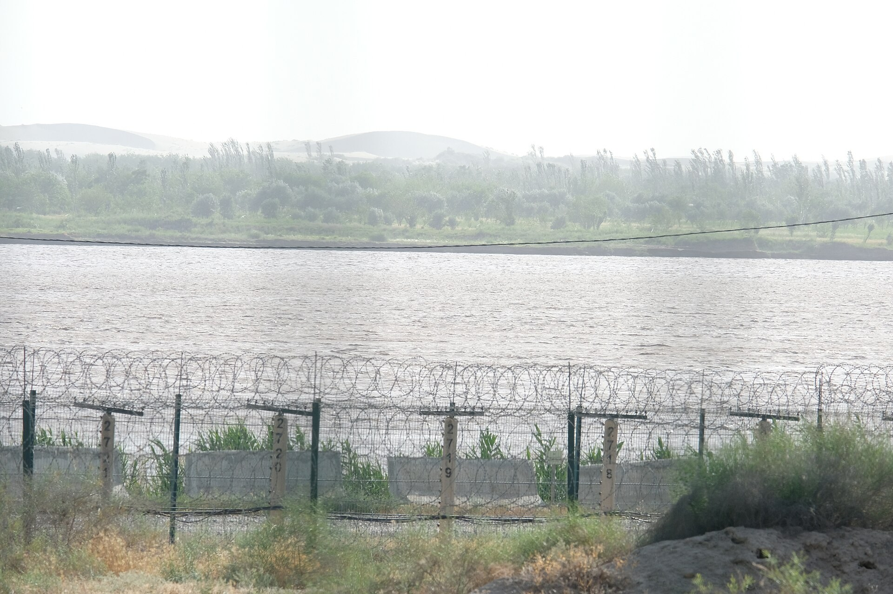

How water is shared in Central Asia: the Amu Darya, Syr Darya and transboundary rivers
The whole life of Central Asia depends on two great rivers — the Amu Darya and the Syr Darya. Because they cross several countries, water here is not a national but a regional question. This guide explains where the water comes from, the "water-energy" conflict between upstream and downstream states, the sharing system set up by the 1992 Almaty Agreement, contested dams such as Rogun and Kambarata, and the Aral Sea disaster — based solely on reputable sources (FAO, World Bank, European Parliament, ICWC). Figures are approximate and change periodically.

Central Asia is one of the world's driest regions, and its agriculture, cities and energy all depend on two transboundary rivers — the Amu Darya and the Syr Darya. Because these rivers flow through several countries, sharing their water is a matter for the whole region, not any single state. Below, how the water is shared is explained solely on the basis of reputable sources; all figures are approximate and vary from year to year.
Two great rivers
The Amu Darya is about 2,400 km long. It rises in the Pamir Mountains, formed by the confluence of the Panj and Vakhsh rivers, and flows through Afghanistan, Tajikistan, Turkmenistan and Uzbekistan, historically reaching the Aral Sea. The Syr Darya is about 2,250 km long, formed in the Fergana Valley by the Naryn and Kara Darya rivers rising in the Tian Shan, and runs through Kyrgyzstan, Uzbekistan, Tajikistan and southern Kazakhstan. Both rivers naturally fed the Aral Sea basin. According to FAO, the average annual surface-water resource in the Aral basin is roughly 115.6 km³ (Amu Darya ~78.5 km³, Syr Darya ~37.1 km³).
Upstream and downstream: the "water-energy" knot
The region splits into two groups. Upstream lie water-rich but mountainous Tajikistan and Kyrgyzstan, with little irrigated land; their main wealth is river water and hydropower. Downstream lie Uzbekistan, Turkmenistan and Kazakhstan, with vast irrigated agriculture. The conflict follows: upstream states want to store water and release it in winter for electricity and heat, while downstream states need that same water in summer, during the growing season. As the World Bank's "Water and Energy Nexus" analysis notes, this nexus is the region's core structural problem.

The Soviet system and the 1992 Almaty Agreement
In the Soviet era the basin was run as a single system from Moscow: upstream released water downstream in summer, and in return downstream supplied upstream with gas, coal and electricity in winter — a water-for-energy barter. After 1991 this barter broke down. On 18 February 1992, Kazakhstan, Kyrgyzstan, Tajikistan, Turkmenistan and Uzbekistan signed the Almaty Agreement, affirming equal rights to the water and creating the Interstate Commission for Water Coordination (ICWC). Its executive arms — two Basin Water Organizations (BVOs), "Amu Darya" and "Syr Darya" — operate the main structures and enforce the quotas.
In what shares the water is divided
The allocation shares are mostly inherited from Soviet-era schemes and are approximate. For the Syr Darya, commonly cited shares are: Uzbekistan ~50.5%, Kazakhstan ~42%, Tajikistan ~7%, Kyrgyzstan ~0.5%. For the Amu Darya, the main operating rule splits the flow roughly 50/50 between the two large downstream users, Turkmenistan and Uzbekistan, with smaller allocations upstream. These figures are not a fixed law but work through annual agreement and inherited practice; sources differ somewhat.
Agriculture and external dependency
Most of the water goes to farming: FAO estimates that about 90% of water use in the basin is spent on irrigation. This is especially sensitive for Uzbekistan, because roughly 80% of its renewable water forms outside its borders — in the upstream states. In other words, much of the country's water arrives from neighbouring territory, tying water directly to regional cooperation and trust.
Rogun and Kambarata: contested dams
The biggest disputes have been over large hydro projects. The Rogun Dam (Tajikistan, on the Vakhsh) is designed to be 335 metres high — the tallest dam in the world once completed — with a planned capacity of about 3,600 MW. Kambarata-1 (Kyrgyzstan, on the Naryn) is designed at about 256 metres and ~1,860 MW; and the Toktogul reservoir (~19 km³) on the Syr Darya system sits at the centre of the summer-irrigation versus winter-energy conflict. Uzbekistan once strongly opposed Rogun, fearing that filling the huge reservoir would cut summer water. Under President Shavkat Mirziyoyev, Uzbekistan dropped its opposition to Rogun in 2018, a major thaw in regional water politics.
The Aral Sea disaster
Over-abstraction of water showed its gravest consequence in the Aral Sea. From the 1960s, Soviet planners diverted the Amu Darya and Syr Darya for large-scale irrigation, above all for cotton monoculture. As a result the Aral Sea — once the world's fourth-largest lake — shrank sharply from about 68,000 km² in 1960 (FAO cites ~8,600 km² by 2017), lost roughly 90% of its volume, split into separate basins, saw its fishing industry collapse, and left behind the "Aralkum," a desert of salt and chemical dust.
Cooperation: the Aral Sea fund and recent steps
The region is also trying to manage water through cooperation, not only dispute. In 1993 the five states created the International Fund for Saving the Aral Sea (IFAS) — the main regional body for water and the environment. The rapprochement after 2016 revived water diplomacy. The clearest recent example is the Kambarata-1 project: in 2023 Kyrgyzstan, Kazakhstan and Uzbekistan signed a roadmap, and in 2024 agreed to build and operate it jointly (shares roughly 34/33/33), with the World Bank involved and financing planned to begin in 2026. The ICWC, meanwhile, continues to set new water quotas each year.
Important note
This is general information. The region's water-sharing figures (shares, volumes, dam capacities) are approximate and change according to annual agreements, weather and new projects. Sources differ on some shares, so the overall system and principles matter more than exact percentages.

Sources
- FAO AQUASTAT — Aral Sea basin (daryolar oqimi, suvning ~115,6 km³, sugʻorishga ~90%, Oʻzbekistonning ~80% tashqi bogʻliqligi, Orol dengizi sathi)
- World Bank — Water and Energy Nexus in Central Asia (yuqori/quyi oqim, suv-energiya ayirboshlashi)
- European Parliament (EPRS) — Water disputes in Central Asia (1992-yilgi Olmaota bitimi, ICWC/BVO, taqsimot ulushlari)
- ICWC / CAWater-info — Interstate Commission for Water Coordination (komissiya nizomi, havza tashkilotlari)
- Wikipedia — Rogun Dam / Kambarata-1 / International Fund for Saving the Aral Sea (inshoot oʻlchamlari, 2018-yilgi oʻzgarish, IFAS 1993)
- The Diplomat — Kambarata-1 joint financing from Kyrgyzstan, Kazakhstan and Uzbekistan (2023–2026 hamkorlik)